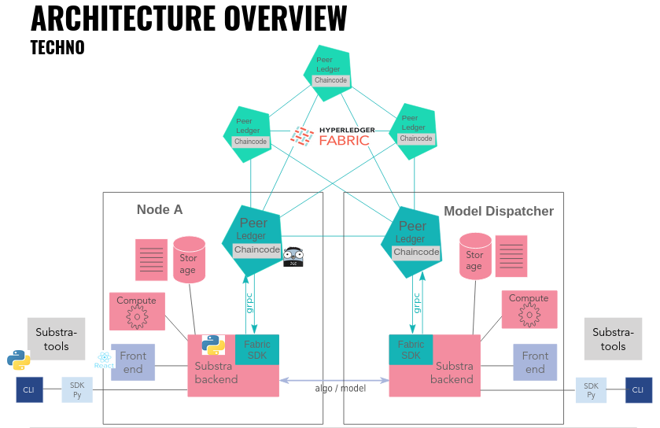

Architecture¶
Main Substra repository: https://github.com/SubstraFoundation/substra

Network¶
The hlf-k8s repository is an implementation of Hyperledger Fabric and is in charge of the initialization of the Fabric network. By default, it will create an orderer and two orgs (org-1 & org-2).
Substra Hyperledger Fabric Kubernetes repository: https://github.com/SubstraFoundation/hlf-k8s
Distributed Ledger Technology (DLT) & Smart contracts¶
Note: The network is based on the Chaincode repository and is initialized with Certificate Authorities via the deployment of the Hyperledger Fabric Kubernetes repository.
Substra Chaincode repository: https://github.com/SubstraFoundation/substra-chaincode
The DLT network is build with the open source software Hyperledger Fabric (version 1.4).
More precisely, we use Hyperledger Fabric to deploy a network of several nodes following this kind of configuration:
Organisations (Orgs): multiple “application” orgs: For example, there will be one peer, a membership service provider (MSP) and a root certificate authority (RCA) for each organisation. Additionally, there is an “orderer” organisation.
Channel configuration: One channel whose members are all the orgs.
Endorsement policies: for example, “any member of the orgs in the channel” (details here)
Ledger: a private and permissioned blockchain¶
“The ledger is comprised of a blockchain (‘chain’) to store the immutable, sequenced record in blocks, as well as a state database to maintain current state. There is one ledger per channel. Each peer maintains a copy of the ledger for each channel of which they are a member.”
Source: https://hyperledger-fabric.readthedocs.io/en/release-1.4/ledger.html
It is a key-value that only contains information about the “compute plan”: Which data was used with which model for x% performance. It is consensually built and can not be corrupted. It is operated by the chaincode. The ledger of each node is updated frequently and consistently in order to register new Assets, set the Asset permissions, and append recent/requested computation tasks to the task history. Only non-sensitive metadata transit within this network.
In the ledger, the following elements are stored:
Objective
Hash of the metrics and url of to request it
Id and hash of test data; node that stores them
Permissions
Dataset
Hash of the opener and url of to request it
Id and hash of data; node that stores them
Permissions
Algorithm
Hash of the algo and url of to request it
Node that created it
Permissions
Models
Specification of training tasks
Specification of aggregation tasks
Specification of evaluation tasks
Smart contracts (Chaincode)¶
Substra Chaincode repository: https://github.com/SubstraFoundation/substra-chaincode
Smart contracts are a set of data, rules, definitions and processes that will govern the interactions between the different stakeholders and enable the complete traceability of data use. Additionally, smart contracts can be used for distributed and infalsifiable permissions.
Backend / API endpoints¶
Substra backend repository: https://github.com/SubstraFoundation/substra-backend
The backend is developed in Python and uses the Django Rest Framework. Most tasks represented in workflows are run asynchronously. To plug the back-end to Hyperledger Fabric, we use the Python Fabric SDK.
The backend implements workflows illustrated in the previous figure. Note that these workflows are only an overview, these representations are not perfectly accurate. Please also note that authentication is not represented in these workflows.
Interface¶
Substra SDK & CLI repository: https://github.com/SubstraFoundation/substra
CLI & Python SDK¶
The CLI provides an command line interface to interact with the Substra backend. The CLI makes it possible to add Assets to Substra and also to list registered Assets. See CLI References
The SDK provides a Python SDK that permits interactions with the Substra backend. The Python SDK provides the same functionalities as the CLI and offers the flexibility of a Python environment. As Python is a favored programming language of data scientists, it makes it easier for them to interact with Substra. In addition, the SDK makes it possible to integrate Substra in any Python-based application. See SDK References
Frontend Interface¶
Substra Frontend repository: https://github.com/SubstraFoundation/substra-frontend
The Frontend is a neat tool to visualize and monitor your operations on the platform, your assets and the associated permissions.
Substra tools¶
Python package defining base classes for assets submitted on the platform:
Github repository: https://github.com/SubstraFoundation/substra-tools.
Pypi webpage: https://pypi.org/project/substratools/
It corresponds to the Python package defining base classes for assets submitted on the platform:
Objective: metrics script
Algo: algo script
Dataset: data opener script
4.5. Components orchestration¶
Substra relies on several software layers that need to be coordinated together. To do so, we use either Kubernetes or Docker, but we strongly recommend you to use the Kubernetes deployment method.